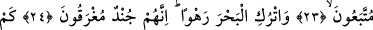
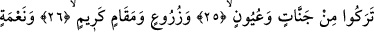
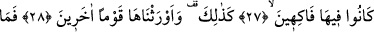
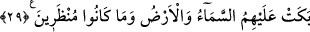
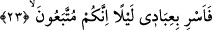

GÖK VE YER
ONLARIN ARDINDAN
AĞLAMADI
22. Sonra (Mûsâ): ”Bunlar, suç işleyen bir toplumdur!” diye Rabbine du‘â etti.
23. (Allah): ”O halde kullarımı geceleyin yürüt. Çünkü takib edileceksiniz”
(dedi).
24. “Denizi (yarıp toplumunu geçirdikten sonra olduğu gibi) açık bırak. Çünkü
onlar boğulacak bir ordudur.”
25. Onlar geride nice şeyler bıraktılar: Bahçeler, çeşmeler.
26. Ekinler, güzel makamlar!
27. Ve zevk u sefâ sürdükleri nice nîmetler!
28. İşte böyle oldu ve biz onları başka bir topluma mîrâs verdik.
29. Onlara gök ve yer ağlamadı. Ve kendilerine fırsat da verilmedi.
Kavmi onu yalanladıktan “Sonra” Hz. Mûsâ (a.s.), “Bunlar” yani bu Kıptîler
küfürlerinde ve nefs ve hevâlarına uymakta ısrarlı “suç işleyen bir toplumdur!” Sen
onları iyi bilirsin. Artık onları hak ettikleri cezayla cezalandır “diye Rabbine du‘â
etti”.
23. (Allah): ”O halde kullarımı geceleyin yürüt. Çünkü takib edileceksiniz”
(dedi).
“O halde kullarımı geceleyin yürüt.” Burada “fâ” âtıfadır. “Fâ” dan sonra bir kavil
kelimesi takdir edilir. Böylece inşâî fiil ihbârî olana atfedilmemiş olur. Gece
yürüyüşüne isrâ denilir. “Serâ” ve “sery” kelimeleri de böyledir. Bu sery zâten gece
yürüyüşü demek olmasına rağmen leyl kelimesinin getirilmesi te’kîd içindir. Mânâ